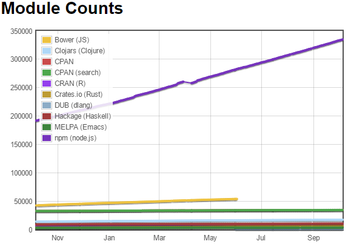
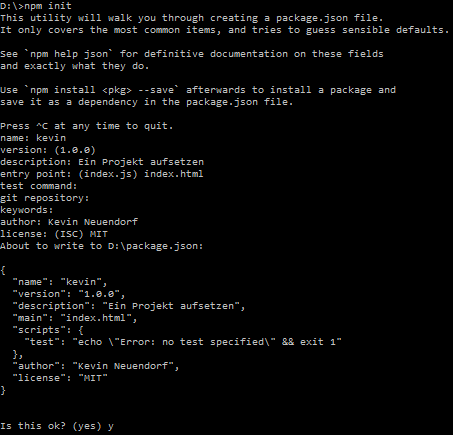

Was?
Npm - Node Package Manager
Bower - A package manager for the web

Warum?
Use npm to install, share, and distribute code; manage dependencies in your projects; share & receive feedback.
→ Npm hat über 240.000 Pakete (Stand 03.16)
Web sites are made of lots of things — frameworks, libraries, assets, and utilities. Bower manages all these things for you.
→ Bower hat fast 130.000 Pakete (Stand 03.15)
Wie?
Ein Projekt aufsetzen
